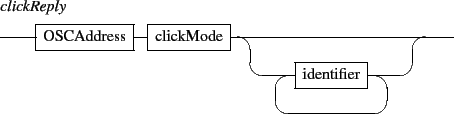

Blur parameters are the blur radius and a rendering hint. The radius is an int32 value. By default, it is 5 pixels. The radius is given in device coordinates, meaning it is unaffected by scale.

Use the performance hint to say that you want a faster blur, the quality hint to say that you prefer a higher quality blur, or the animation when you want to animate the blur radius. The default hint value is performance.